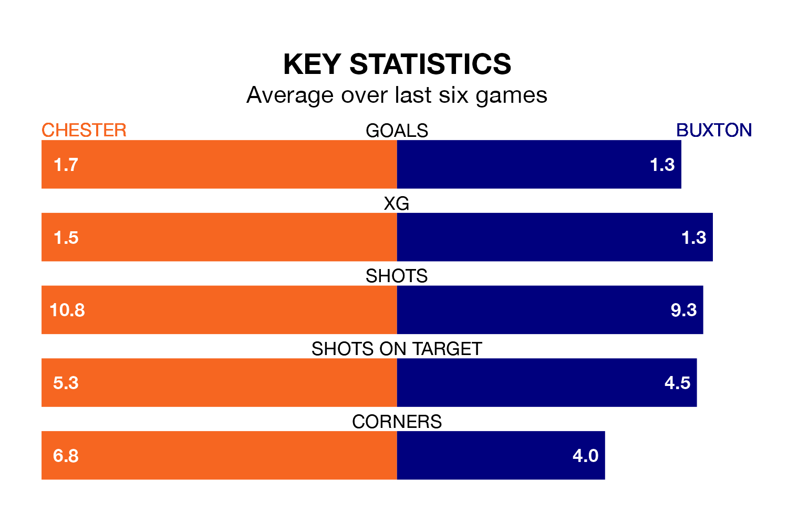

Chester face Buxton on Tuesday seeking to protect their formidable unbeaten run in National League North.
Chester are unbeaten in nine, with five wins and four draws, ahead of the 7.45pm kick-off.
They face a Buxton team who have won two and drawn one over the same number of games.
With 39 goals in 27 games so far this season, Buxton are scoring more than average in the league with 1.4 goals per game. And they are conceding at an average rate, letting in 35 goals at a rate of 1.3 per game.
Chester, meanwhile, are below average scorers, with 1.2 goals per game, compared to a league average of 1.3. They have conceded 0.8 goals per game.
The away side are 19th in the table after 27 games, of which they have won eight and drawn seven, earning 31 points.
The hosts are 10 places ahead of Buxton in ninth, with 12 wins and six draws putting them on 42 points.
Over the last two years, Chester and Buxton have played each other twice. Chester won one of them and they drew the other.
Their last meeting was on April 29, when Chester won 4-0 at home.
Chester's last match was on Saturday, a 3-0 win against Gloucester City.
Buxton lost 2-1 against Alfreton Town last time out, on December 26.
Updated: 14:53 (UTC), 16/01/24